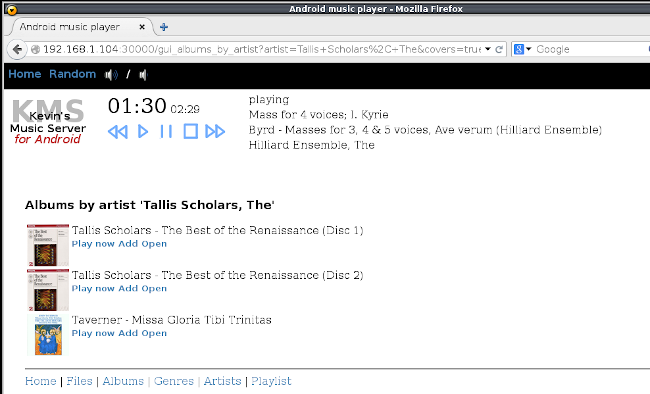
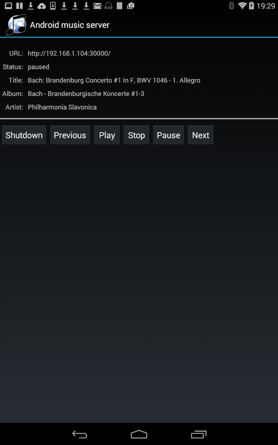

Implementing a web-based music player for Android
 Android devices can make reasonable music players, particularly
if connected to an external DAC and a reasonable amplifier.
In fact, many modern Android cellphones have fairly good DAC
hardware of their own. I would expect that most Android users
will use the handset itself to select content to play, and
control playback. However, sometimes it's useful to have
an Adnroid device in a semi-permanent audio installation, with
its own library of music in internal memory or SD card.
High-capacity (e.g., 256Gb) SD cards are now very affordable
and, if you most play music at better-than-CD quality, that's
a big deal, as a single album may require 2Gb or more of
storage. The problem is that most Android audio apps
-- and there are many splendid ones -- are designed
to be controlled only by their own user interfaces. This
is unhelpful when the device is in a different room,
for example.
Android devices can make reasonable music players, particularly
if connected to an external DAC and a reasonable amplifier.
In fact, many modern Android cellphones have fairly good DAC
hardware of their own. I would expect that most Android users
will use the handset itself to select content to play, and
control playback. However, sometimes it's useful to have
an Adnroid device in a semi-permanent audio installation, with
its own library of music in internal memory or SD card.
High-capacity (e.g., 256Gb) SD cards are now very affordable
and, if you most play music at better-than-CD quality, that's
a big deal, as a single album may require 2Gb or more of
storage. The problem is that most Android audio apps
-- and there are many splendid ones -- are designed
to be controlled only by their own user interfaces. This
is unhelpful when the device is in a different room,
for example.
This article describes the construction of an audio player for local files on an Android device, controlled by a web browser. This seems a not-entirely-bizarre thing to want to do and yet, so far as I know, nobody produces an Android app to do it. That's a shame because, frankly, I'm not hugely experienced with Java development for Android, and I'm sure somebody else could make a far better job of implementing an app like this. For me, Android development is like plumbing or bricklaying -- I can do it if I really must, but I don't enjoy it, I'm not all that proficient at it, and I'd rather it were done by somebody else.
I actually wrote the first version of Android Music Server back in 2015 and, in the years that followed, I kept expecting to stop needing it, because something far superior would become available. I've only made minor bug fixes -- the app itself is pretty much as crude and unsophisticated as it was seven years ago. I'm really bringing it up again now in the hope that I can inspire somebody else to take an interest, and do the job properly.
What it looks like
Android Music Server has a fairly plain web interface, based on ordinary HTTP and a bit of JavaScript:

It can display a list of albums, artists, composers, or genres.
The whole list is on one page so, if you have thousands of
albums (or artists, or whatever), you'll need a robust web browser to
display the list. You can choose to display the lists with,
or without, cover art. The app won't extract cover art
from media files themselves, but it will look for
well-known cover art filenames, like cover.png
and folder.png. Because the list of
albums/artists/etc is displayed on one page, downloading all
the cover art can be a slow-ish process, which is why its
presentation is optional.
The browser display shows what is currently playing, and provides access to a volume control and equalizer (that may, or may not, actually be implemented in a specific Android device).
The app itself has a pretty crude user interface:

The only real purpose of the user interface is to display the URL you need to point your web browser at. However, there are rudimentary playback controls as well. The user interface is ugly, but I don't expect to be spending more than a few seconds looking at it.
How it works
Music playback in an Android app is surprisingly straightforward,
so long as you use the built-in media player. Android provides a
Java API based on the anddroid.media.MediaPlayer class.
It's only necessary to provide it with a filename of the file to
play, and then set it going. The API also provides methods for
determining the playback position, and registering a
completion listener. This listener is invoked when a track
has finished playing, so the player can advance to the next one
in the playlist.
Android also provides a media database, with an API in the
android.provider.MediaStore class. Android updates
the database automatically when tracks are copied onto storage
using any of the supported mechanisms. It also has background
scanning to handle cases where files arrive without an
explicit transfer, such as when a new SD card is inserted.
Unlike the media player API, the media database API is far from straightforward, and most of the work of implementing this app has been in manipulating the media database. There's still a lot about it that, quite frankly, I don't understand, which is probably why my handling of audio genres is so inefficient. There's definitely still work to do in this area.
The HTTP server is derived from NanoHTTPD, which is maintained by a number of authors. The whole HTTP server fits into a single Java class. It's pretty limited, but it's fine for this simple application. Android Music Server uses HTTP not only to provide the Web interface, but also to expose a REST API. The REST API allows for playback to be controlled and monitored, and tracks to be added to the playlist. The Web interface is partly implemented in JavaScript, which interacts with the REST API. This interaction makes it possible to update the web interface -- to show what is currently playing, for example -- without having to refresh the browser page.
One slight complication is that the actual playback of the playlist must be managed in an Android service, not in the app itself. This is because the app's user interface may be invisible, and could even be unloaded if the user is not interacting with it. The user interface starts a service, which will continue to interact with the built-in media player even when the user interface is unavailable.
The whole app, in its present form, is implementing in about 6,400 lines of new Java code, plus the 1,400 lines of Java in NanoHTTPD. It's not a particular large program, because the Android APIs are doing most of the hard work.
Obtaining the app
If anybody is interested in trying this software -- or, better yet, taking over its maintenance -- the source and installable APK are available in my GitHub repository. Unfortunately, many Android devices make it a little awkward to download and install APK files, because of potential security problems. However, it's usually possible to do do; and, of course, anybody who's concerned about security is welcome to examine and compile the source -- you'll need the Google Android Development Kit for Android, but that's easy enough to obtain and set up. Android Music Server won't ever be appearing in the Google Play store, because Google charges a fee to register as an app provider, and I can't afford to spend money to distribute software for which I don't charge.
Further work
Even in its current, crude form, Android Music Server seems to work tolerably well. I use it frequently, on a number of different devices and, even though the code is now seven years old, it still does what I need it to.
Still, there's a lot that could be improved. The user interface, both in the app itself and the web browser, looks like it's from the 90s, and isn't particularly snappy. Media database searches can be very slow, particular where the search involves genre tags (I'm still not really sure why this is). The app can, in principle, display and play files from the filesystem, not just the media database, but permissions problems -- always a niggle with Android -- make this impractical on some devices. I suspect that there are new features in later Android releases that would allow the app to be made much more efficient but, to be honest, I'm not really up to date with Android development these days.
Creating and maintaining this app has been an interesting exercise in Android media programming but, as I said at the start, I can't help thinking that better apps already exist, if I could only find them. Suggestions are most welcome.